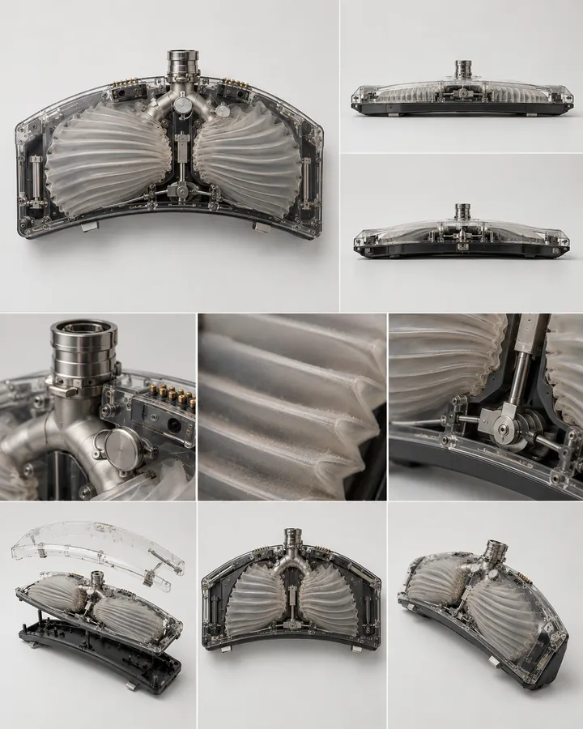
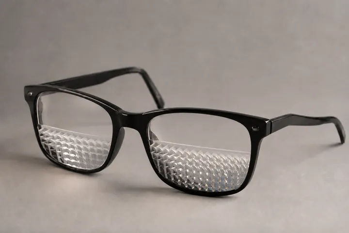
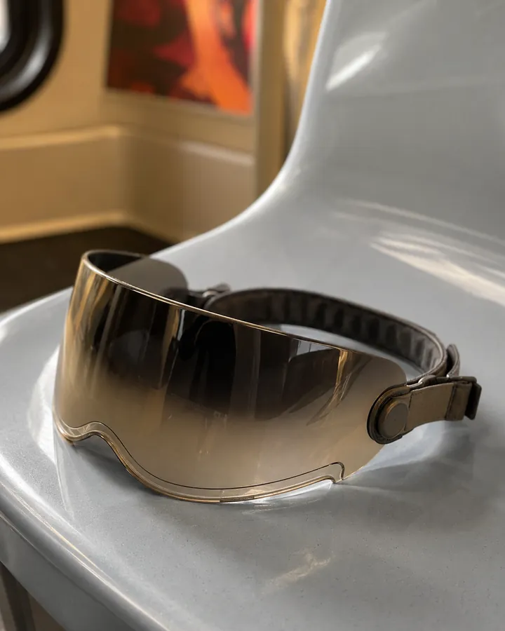

A short story set in 2126. You cannot fly with an android body and you cannot send a personality over a network, so the only legal way to bring one anywhere is to carry the core and rent a body on arrival.
Read the story → Received · Posting from the Futureno my android can’t come in saturday, it’s got custody that weekend. yeah the little one, they got two now. i know. i KNOW. anyway can you cover? i’ll owe you. bringing snacks that aren’t the sad ones this time
My son asked what “afford” meant. I explained it the way my grandmother explained rationing to me, slowly, watching for the part that wouldn’t land. He got the mechanism fine. What he couldn’t follow was why you’d let the number decide whether you ate the thing you were looking at.
Wrapped my first Mars rotation on the atmosphere team. Left proud, came home to my kid asking why the sky here is the wrong blue. I told her ours is the real one. She said the Mars one is warmer and she’s not wrong, the tuning notes are public. Anyone else’s family started preferring the draft over the original?
hey did you turn off the overlay again?? grandma’s kitchen looked completely bare when I came by. she said she prefers the real walls now, all yellow and stained. I turned it back on out of habit and she asked me to leave it. we just sat there in the actual room. it was fine actually. quieter